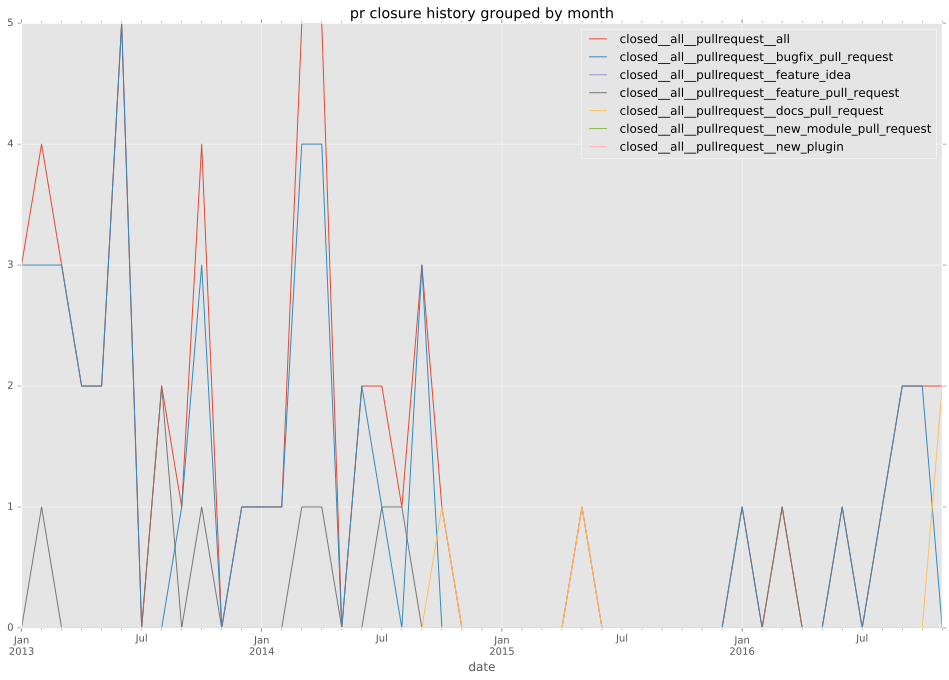
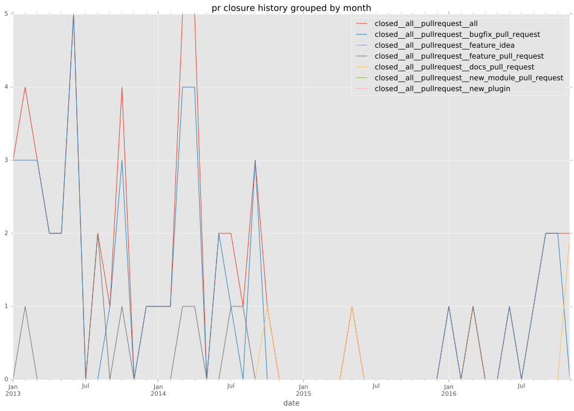
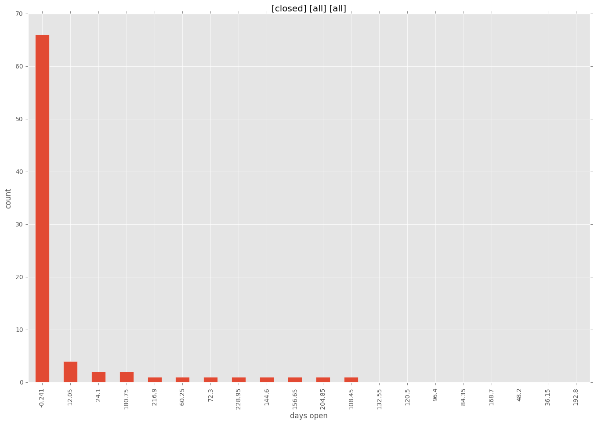
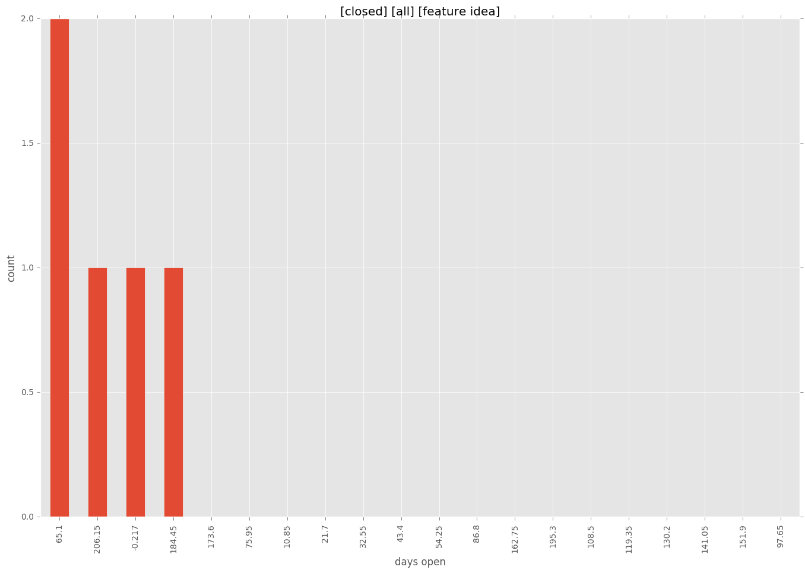

authors
- jvantuyl
maintainers
- jvantuyl
contributors
- mpdehaan : 42 commits
- jvantuyl : 23 commits
- grosskur : 15 commits
- mattclay : 9 commits
- leafnode : 7 commits
- andreasf : 7 commits
- jimi-c : 6 commits
- evverx : 4 commits
- veeti : 3 commits
- sfromm : 3 commits
- jpmens : 3 commits
- trbs : 2 commits
- callipeo : 2 commits
- philpep : 1 commits
- muffl0n : 1 commits
- mavimo : 1 commits
- mattymo : 1 commits
- lorin : 1 commits
- leth : 1 commits
- jmdh : 1 commits
- jctanner : 1 commits
- asheplyakov : 1 commits
total issue counts
bugfix pull request: 42
docs report: 1
pullrequest: 54
docs pull request: 2
feature pull request: 10
feature idea: 6
issue: 32
bug report: 25
issue history

pullrequest history
 

days open by issue type
feature pull request
count: 15
std: 60.227979576
min: 0
max: 208
median: 9.0
mean: 34.8666666667
all
count: 110
std: 49.5224029135
min: 0
max: 241
median: 1.0
mean: 19.1636363636
pullrequest
count: 0
std: nan
min: nan
max: nan
median: nan
mean: nan
docs pull request
count: 4
std: 1.73205080757
min: 0
max: 3
median: 1.5
mean: 1.5
docs report
count: 1
std: nan
min: 0
max: 0
median: 0.0
mean: 0.0
bugfix pull request
count: 63
std: 6.39512262947
min: 0
max: 31
median: 0.0
mean: 3.46031746032
feature idea
count: 5
std: 90.0627558983
min: 0
max: 217
median: 73.0
mean: 109.4
issue
count: 0
std: nan
min: nan
max: nan
median: nan
mean: nan
bug report
count: 22
std: 73.3497817051
min: 0
max: 241
median: 2.5
mean: 37.0
closures grouped by total days open

